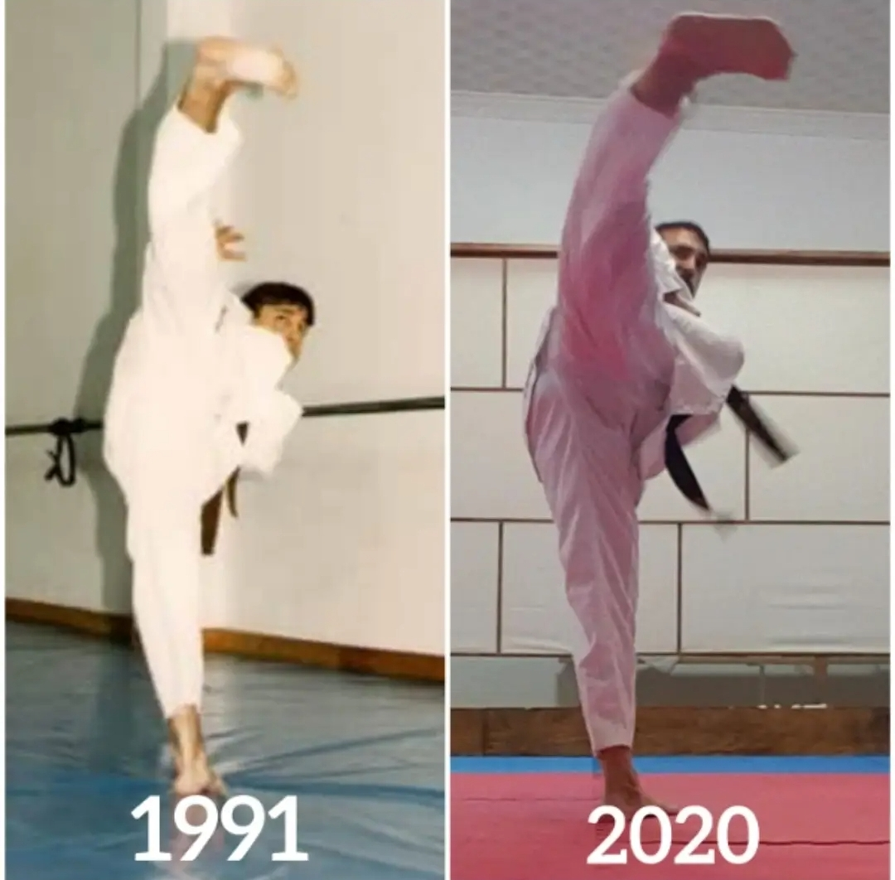

Nuestro Maestro, Francisco Corbas se formó como discípulo directo, desde 1988, del Grand master Hyun Chul-Oh en Jaca (Huesca), uno de los maestros pioneros en la difusión en España del Taekwondo.
Obtuvo su cinturón negro en 1996 y participó como competidor federado en la Federación Española de Taekwondo en diversas competiciones regionales y nacionales en la década de los años 90, logrando buenos resultados en dichos campeonatos.
Además, es practicante activo y poseedor de varios cinturones negros con grados desde el 1º al 5° Dan en disciplinas como Taekwondo, kickboxing y taekwondo korean semi contact todos ellos reconocidos y homologados por sus respectivas federaciones (KUKKIWON, FAT, FET, FAKM, FEKM, FEDAMC) y por el Consejo Superior de Deportes. También fue practicante de otras artes marciales como el Karate, Hapkido, Nambudo Capoeira o Muay Thai.
Como profesor, comenzó su andadura como ayudante de su propio maestro realizando sustituciones y como acompañante en escuelas deportivas en la década de los años 90, empezando a impartir clases de manera profesional en el año 2011, año en el que fundó su primera escuela de artes marciales.También asumió el cargo de profesor de deportes de lucha (2014) en la optativa a ciencias de la educación física y el deporte en instituto Ramón Arcas (Lorca, Murcia).
Por el continuo ir y venir de diversos monitores, en 2015 fue contratado por la escuela de artes marciales de El viso del Alcor para dirigir dicha escuela, la cual fue adquirida por nuestro maestro y que hoy perdura bajo el nombre de CD Kirosport. Desde entonces ha formado a cientos de alumnos visueños, algunos de ellos grandes campeones de ámbito regional, nacional e internacional.
Nuestro maestro posee diversas titulaciones: técnico deportivo de kickboxing, Muay thai y taekwondo (titulación académica de maestro entrenador nacional), obtenida en el centro de alto rendimiento de Madrid y otorgada por el Consejo Superior de Deportes de Madrid, coach deportivo, entrenador maestro nacional (desde 2015), árbitro regional y árbitro nacional e internacional.
